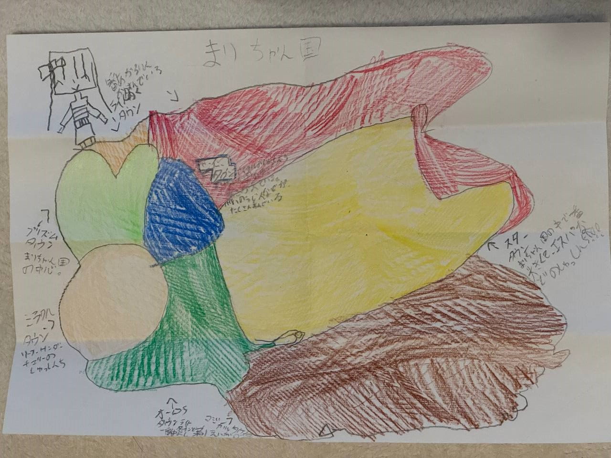

星あかり広場
夜になると床の星が少しずつ光り、願いごとを照らします。
Today's Land
夜になると床の星が少しずつ光り、願いごとを照らします。
歩くたびに小さな音が鳴る、元気を集めるための道です。
笑うと花びらがふわっと開く、まりちゃん国の入口です。
Access
写真が届くまでは、デモの道案内で開園しています。

空が明るく見える出口から、まっすぐ進みます。
橋の中央で小さく手を振ると、入口の旗が見えます。
門の前で好きな魔法をひとつ選ぶとミラーインできます。
Characters
今はデモの紹介です。あとで送ってもらう写真に合わせて差し替えます。
まりちゃん国の主役。楽しいことを見つける力がとても強い。
得意: にこにこ魔法はじめて来た人を入口まで連れていく、やさしい案内係。
得意: 道しるべ魔法新しい魔法を試して、ランド中に小さな驚きを増やしている。
得意: ひらめき魔法入口ゲートを見守り、ミラーイン証に今日の光をともします。
得意: あんしん魔法アイドルを目指している女の子。歌とダンスでみんなを元気にするため、まりちゃん国で毎日レッスンしています。
得意: きらめきステージ魔法まりちゃん国を不思議な力でつくった人。みんなが安心して遊べるように、空や道や魔法の門をそっと見守っています。
得意: 国づくりのふしぎ魔法Magic
ミラーイン登録で、今日いっしょに使いたい魔法を選べます。
Songs
まりちゃん国で歌いたい曲を集める、楽しいステージです。
きらきらした気持ちがはじまる、アイクルスパークルにぴったりの歌です。
はじめてのミラーインにぴったりな、明るいテーマソングです。
手拍子しながら歌える、元気いっぱいの魔法ソングです。
ゆっくりした気持ちになれる、星あかり広場のやさしい歌です。
Anime
まりちゃん国のものがたりを、短いアニメとして楽しめる場所です。
アイクルスパークルのアニメ化が決まったことを知らせる、はじまりのスペシャル映像です。
ひかりの門を見つけたまりちゃんが、はじめてまりちゃん国へ入るお話です。
アイドルを目指すアイクルが、歌とダンスでみんなを元気にします。
ぱぱチャンが不思議な力でまりちゃん国をつくった日の、ひみつのお話です。
Ticket
名前と好きな魔法を入れると、まりちゃん国のミラーイン証が出ます。
Diary
開園準備のメモを残していきます。
入口ゲート、魔法リスト、ミラーイン証のデモができました。
登場人物と行き方の写真をあとから入れられるようにします。
GitHub Pages で公開できるように、Actions の設定を用意します。
Album
本番の写真が入るまで、色と光のデモアルバムを置いています。
Admin
このブラウザで作ったミラーイン証を確認できます。
| 番号 | 名前 | 魔法 | 目的 | 日時 |
|---|